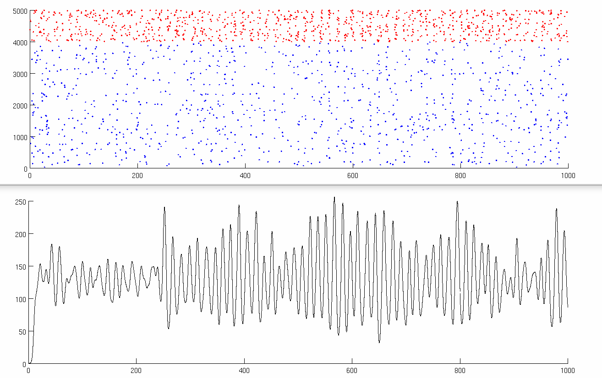
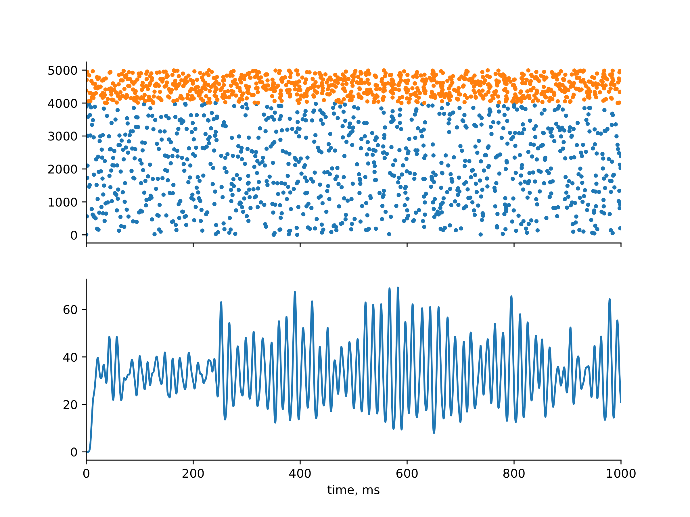

Demo code for the kernel method to calculate LFPs from the spikes of a network of point neurons
This demo shows the code to calculate the local field potential (LFP) generated by a network of point neurons. The kernel method calculates the LFP solely from the spikes of the neurons, and the knowledge of their position in space. This kernel method is explained in detail in the publication:
Telenczuk, B., Telenczuk, M. and Destexhe, A. A kernel-based method to
calculate local field potentials from networks of spiking neurons.
bioRxiv preprint:
https/www.biorxiv.org/content/10.1101/2020.03.29.014654v1
The program reads the raster of spike times, plots it, and then calculates the LFP, and plots it. The example provided is Brunel's model of gamma oscillations (the code reproduces Fig. 6 of the paper).
Two versions are available each of which runs in less than 10 seconds:
This demo is open-access, but please cite the original work if you use it.
The NEURON code was most recently tested with NEURON -- VERSION 7.8.0-99-gda5790d7 master (da5790d7) 2020-03-19 and using nrngui (no mod files to compile) generates figures like

The Python code was most recently tested with '3.6.9 (default, Apr 18 2020, 01:56:04) \n[GCC 8.4.0]' and generates figures like
